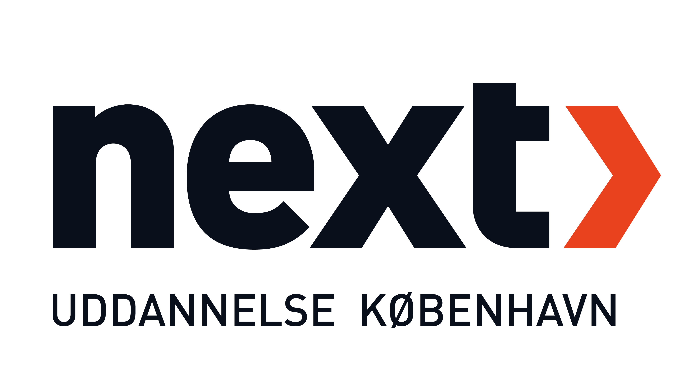
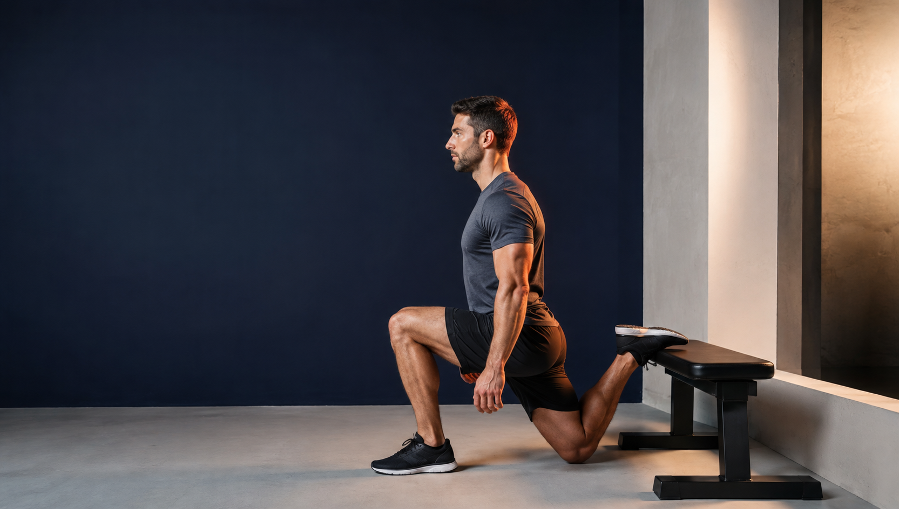

Navn
Latinske navne, muskelgrupper og hvilke dele en muskel består af.


Quiz Fitness · Anatomi · Underkroppen
22 skarpe spørgsmål om navn, placering, funktion og øvelsesvalg. Ét rigtigt svar. Faglig forklaring med det samme.
Udviklet til elever på NEXTs fitnessuddannelse
01 Læringsmål
Quizzen omsætter repetitionskortene til en fokuseret test. Du får straks at vide, hvorfor svaret er rigtigt, så hvert spørgsmål også bliver en mikrolektion.
Latinske navne, muskelgrupper og hvilke dele en muskel består af.
Udspring, hæfte og musklernes placering i forhold til knogler og led.
Hvilket led musklen arbejder over, og hvilken bevægelse kontraktionen skaber.
Øvelser og variationer, der involverer eller fremhæver den enkelte muskel.
02 Quizflow
01 M. iliopsoas
Vælg en svarmulighed for at fortsætte.
Resultat Din evaluering
01 Faglig profil
02 Facit